一、WAIC 2026全景：规模扩大、产业进入深水区
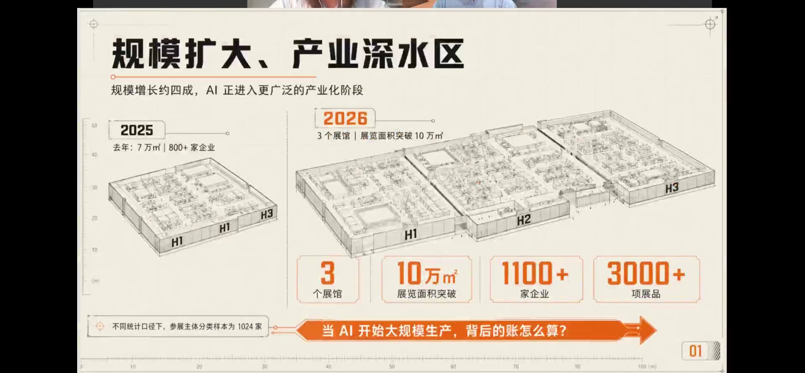
1.1 为什么要看WAIC？
大会虽带有企业集中PR和展示的属性，但它回答了一个关键问题：科技厂商今年最想讲什么、对未来趋势怎么判断，这些都会集中放在展台中央。因此看WAIC，相当于把握未来1-2年的AI风向。今年格外不一样——规模更大、最高层也到场，关注度空前。
1.2 规模数据：从7万㎡到10万㎡
- 展馆：今年开3个馆——主场馆、硬件馆、张江算力馆；展览面积突破10万㎡（去年7万㎡）
- 企业：参展企业从去年800多家增至1024家（不同统计口径下参展主体分类样本为1024家）
- 展品：3000+项展品；主场馆单个展位已涨至70万元
1.3 展区热度排序
热度从高到低：具身智能/智能硬件 > 算力与基础设施 > AI应用 > 大模型 > AI创新架构与算法
其中具身智能占据第一部分大部分热度。对比过去（大模型和具身占大多数），今年算力基础设施的地位明显前移。
1.4 两年看AI，最关键的变化
王智（志总）的观察沿产业链展开：
- 模型端：从GPT惊艳→百模大战（语言模型→多模态）→Coding等具体功能凸显。2023年ChatGPT每次发新版世界为之一震，如今模型仍在进步，但边际震撼度明显减弱
- 转向Infra：2024下半年到2025年，关注点从模型转向基础设施——开始缺算力芯片，随后发现存储不够、连接不行、功耗太大、供电（尤其美国电网）跟不上
- 落地导向：去年机器人还以唱歌跳舞、翻跟头炫技为主，今年厂商几乎都在搭建真实场景、展示实际功能
核心判断：产业演进一般是三年周期。WAIC是一面镜子，照出AI已从"技术竞速、比版本升级"切换到"产业落地、关注能否切实产生效果"。
二、超节点是什么：从展台现象到一句话定义
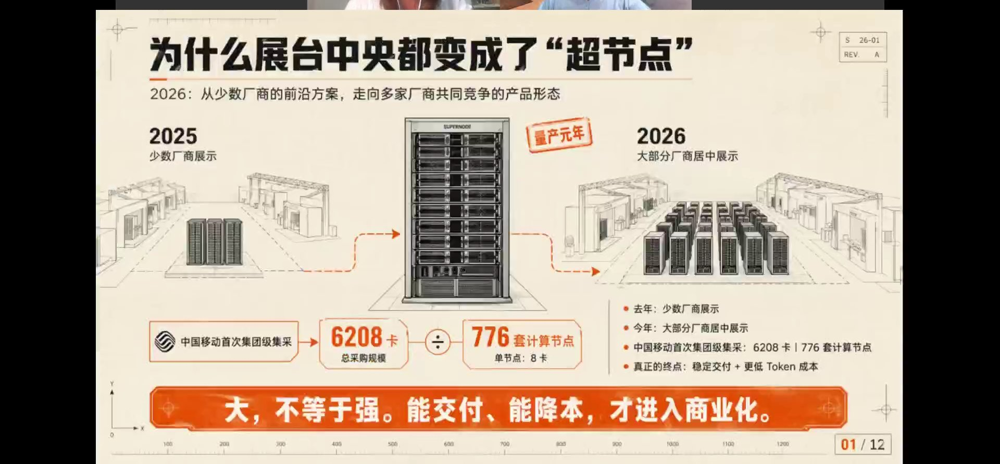
2.1 展台现象：中央位置都给了超节点
今年几乎所有能想到的芯片厂商、系统厂商（华为、中科曙光、中兴、新华三、昆仑、壁仞、阿里云等）都在中央展台展示超节点，并且出现了商业化落地。这与去年只有少数厂商展示形成鲜明对比：
- 2025年：少数厂商展示超节点
- 2026年：大部分厂商居中展示，是超节点的"量产元年"
- 标志性事件：中国移动首次集团级集采——总采购规模6208卡，对应776套计算节点（单节点8卡）
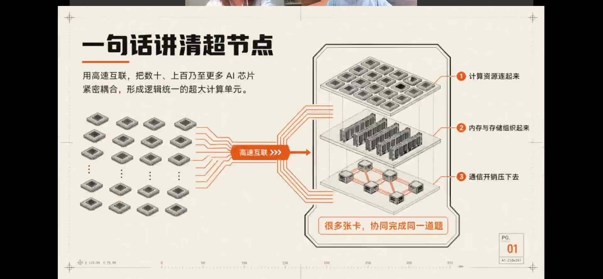
2.2 一句话定义
超节点：用高速互联，把数十、上百乃至更多AI芯片（GPU/CPU/高速互联卡）紧密耦合，形成逻辑统一的超大计算单元，让很多张卡协同完成同一道题。
它本质上是一种系统级创新，原因是交互GPU的单卡算力已经不够。其三个要点：①把计算资源连起来；②把内存与存储组织起来；③把通信开销压下去。
2.3 为什么必然出现？
王智用了两个比喻：
- 城市建筑：10万人的城市盖5层平房即可，人口涨到上千万就必须高楼密布。模型参数从百亿→千亿→万亿，8卡服务器、小集群已无法支撑
- 摊大饼：基础设施像北京环线一样无限摊大，不利于管理、难以并行计算；超节点要把算力限制得更紧凑（compact）
理想状态是一颗芯片完成全部计算（美国也有晶圆级芯片，整张12英寸晶圆做一颗），但物理上无法做这么大的芯片，只能切割成几十万、上百万小芯片，再用高速互联把它们在逻辑上连成"单一芯片"，同时解决高密度存储问题。超节点概念最早由英伟达提出（单机柜内尽量塞更多算力），单机柜塞不下时扩展到旁边机柜，即从 Scale-up 走向 Scale-out。
三、超节点为何加速商业化：三大驱动与"三堵墙"
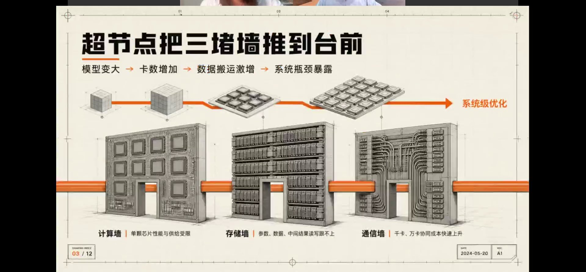
3.1 商业化比预期更快
王智原本预计超节点大规模推广在2027年，实际2026年主流厂商就已推出或联合伙伴推出相关系统，比预期快约一年。背后有三大驱动：
3.2 驱动一：技术需求（模型变大）
- 模型参数已到万亿级（如K3约2.8万亿），去年还是千亿级，最初是百亿级
- 万亿模型无法用8卡服务器或简单连接的小平台承载，必须有超节点，否则即使能训出来也不经济
3.3 驱动二：国产替代（路线不同）
受限于先进制程，国产单芯片算力赶不上英伟达，于是从系统级优化（海思总工廖恒、华为"涛定律"思路）切入，走多机柜互联路线，用机柜数量换取接近英伟达高密度单机柜的性能。中国有两个有利条件：
- 空间足：机房面积不短缺，不像北美要尽量减少"灰区"（英伟达用800V直流入柜来节省机房空间放算力）
- 电便宜：低功耗需求的迫切性没有美国高
3.4 驱动三：成本倒逼
- Agent应用起来后，由机器调用Token，用量比Chatbot时代大很多倍；美国大公司一度考核员工Token用量、挂榜鼓励，两个月后因会严重超发而停止
- 大模型普遍提价（DeepSeek部分Token类型最高提价11倍），免费补贴逐步取消
- 超节点可把算力使用率从传统集群的约30%提升到70%以上，大幅降低Token成本——类似餐馆必须提高"翻台率"
3.5 超节点把"三堵墙"推到台前
链条：模型变大 → 卡数增加 → 数据搬运激增 → 系统瓶颈暴露 → 系统级优化。三堵墙分别是：
计算墙：单芯片性能与供给受限
存储墙：参数、数据、中间结果的读写跟不上
通信墙：千卡、万卡协同的成本快速上升
大，不等于强。能稳定交付、能降低Token成本，才算真正进入商业化。华为先打样，中国公司最擅长从1到10、再到100——只要有人做出来，就会有更多人做出来。
四、超节点的四大共识
去年大家还在验证新架构能否达到理论互联带宽/时延、配套液冷供电能否跟上、软件生态与模型适配成本；今年这些问题已有明确答案，形成四大共识：
4.1 共识一：万亿模型必须用超节点
万亿级大模型必须用超节点承载，否则即使能训练出来也不经济。
4.2 共识二：系统级优化 > 单卡堆砌
- 前几年芯片厂商最强调单卡TOPS，现在很少有人只讲单算力，而是看综合指标：总算力、通信时延、每瓦耗电等
- 系统优化的价值和对能力的考验，已远超单卡性能本身的提升
4.3 共识三：光互联不可逆
- 早期在"铜还是光"上有纠结：英伟达先把铜的效率挖到极限，3米以内铜连接有优势
- 随着机柜数量增多，柜间、跨域连接成为大需求，未来连接一定越来越光化，且会从Scale-out延伸到Scale-up、再到Scale-in（光直接与算力芯片合封），极致状态下部分计算可能采用光计算
- 大规模商用的关键仍在成本与良率
4.4 共识四：超节点采购模式被广泛接受
无论算力中心还是政企采购，都倾向于直接买已全部集成好的超节点，比让集成商采购大量8卡服务器再自行连接简单得多。该形态已被下游广泛接受。
场景化、套娃化趋势：交付一个算力节点必然包含感、算、存、通信、供电、冷却；超节点只是把这些更紧凑高效地塞进有限空间。未来产品会像"套娃"一样，在不同场景用不同规格，内部配置随训练/推理需求而变，但整体架构趋同、标准化程度提高。
五、厂商分层竞争格局与Atlas 950标杆
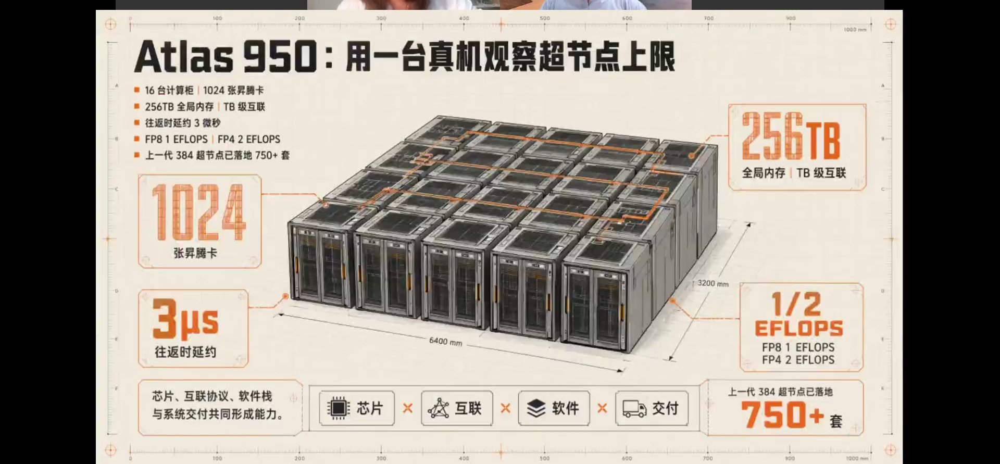
5.1 Atlas 950：国内超节点标杆
- 规模：16台计算柜、1024张昇腾卡；256TB全局内存、TB级互联；往返时延约3微秒
- 算力：FP8达1 EFLOPS、FP4达2 EFLOPS；尺寸6400×3200mm
- 落地：上一代384超节点已落地750+套、进入20多个行业
能力 = 芯片 × 互联 × 软件 × 交付，是综合的系统能力。
5.2 厂商分三层（不考虑英伟达）
第一梯队——华为（最成熟）：
- 384/超节点全球部署超750套、进20多个行业；全栈自研，从芯片到互联协议到整机基本自主（供电、液冷外购）
- 全栈自研使各部件协调性好，私有协议传输速率更有优势（类似英伟达NVLink）；成本可承受时是最容易决策的选择
第二梯队——中兴、新华三（开放解耦）：
- 通信设备/系统方案出身，系统能力强，但没有大算力芯片，需用开放协议集成别人的GPU
- 千卡以上大规模集群仍在一边落地、一边磨合成熟；短期机会较大
第三梯队——GPU创业公司（定型验证）：
- 多用自有芯片+专属（定制）互联，尚未完全开放；算力芯片主要在推理端、训练端尚未大规模进入
- 超节点处于早期定型优化阶段，采购方主要是云厂商和政府训练场，用于验证并培育主流之外的Plan B/Plan C
中科曙光：更多延续超算中心架构、以CPU为主，略有不同。
5.3 谁的价值会被重估？
中短期：系统厂商首先被重估——这个阶段拼的是谁能把系统优化得更好。更长期：云厂商价值凸显——云厂商自研芯片、自研系统、做软件层优化，以提供更有竞争力的Token成本。GPU公司若只停留在卖单芯片，竞争力会受限。
六、超节点产业链：三条链与国产化率排序
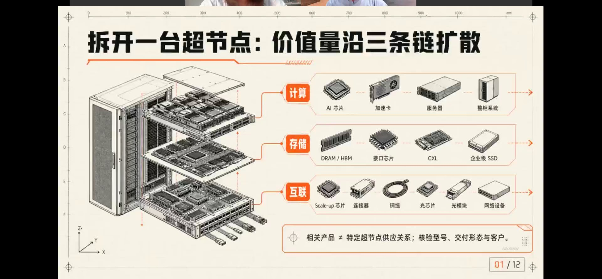
6.1 拆开一台超节点：价值量沿三条链扩散
- 计算链：AI芯片 → 加速卡 → 服务器 → 整柜系统
- 存储链：DRAM/HBM → 接口芯片 → CXL → 企业级SSD
- 互联链：Scale-up芯片 → 连接器 → 铜缆 → 光芯片 → 光模块 → 网络设备
风险提示："相关产品"不等于"特定超节点供应关系"，需核验具体型号、交付形态与客户。
6.2 国产化率排序：通信 > 计算 > 存储
通信（全口径最高）：
- 800G以下光模块（复用传统通信网络）国产化率约70%
- 800G到1.6T约40%-50%
计算（其次）：
- 国产算力芯片整体约40%-50%（推理侧更多）
- 英伟达官方口径其中国市占率已降至40%几（曾达90%几），AMD顶多约10个点
存储（最低）：
6.3 国产芯片能用于训练吗？
- 业界口径：华为超节点已用于训练（华为自有大模型、字节混元等），目前处于上量阶段
- 脱钩不可逆，英伟达国内存量芯片会越来越少；大云厂商要么自研训练芯片（如谷歌TPU），要么先用国产
- 追上英伟达：从系统角度看约2-3年——靠Infra系统优化 + 国产模型与国产算力的软硬协同（DTCO/Co-design，如DeepSeek），实际差距没有单卡账面那么大
七、存储链：搬不动数据、四层体系与长鑫
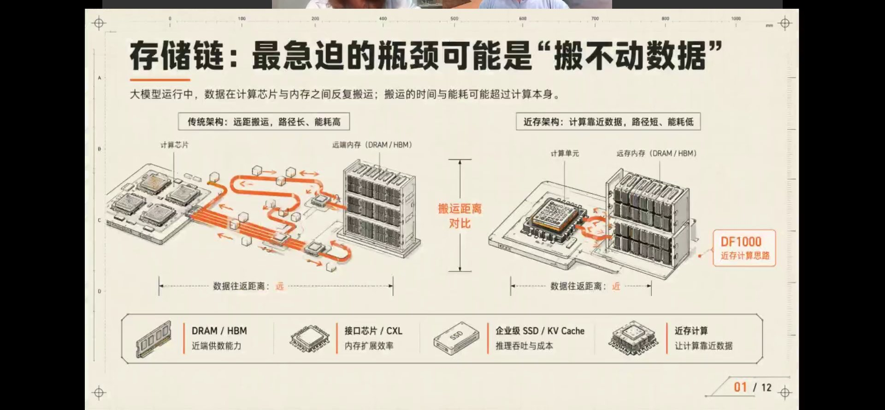
7.1 最急迫瓶颈：数据"搬不动"
大模型运行时，数据在计算芯片与内存之间反复搬运，搬运的时间与能耗可能超过计算本身。
- 传统远距架构：数据搬运路径长、能耗高
- 近存架构：计算靠近数据，路径短、能耗低（如DF1000近存计算思路）
关于近存/存内计算的现状：目前真正商用更多在边缘、端侧，是对传统架构的补充而非替代（需与DRAM/HBM配合）；美国进展更快，国内局端尚在试点，做近存的创业公司没有系统架构能力，必须依靠系统厂商整合。
延伸讨论——端侧"小超节点"：出于数据隐私、网络稳定性、长期成本，算力可能向边缘/端侧下沉（如口袋大小的GPU服务器、手机侧1000 TOPS芯片用于本地跑Agent）。但历史上NAS（本地存储服务器）、家庭小基站都未成功，最终取决于成本、安全性与云-端网络性能，仍需观察。
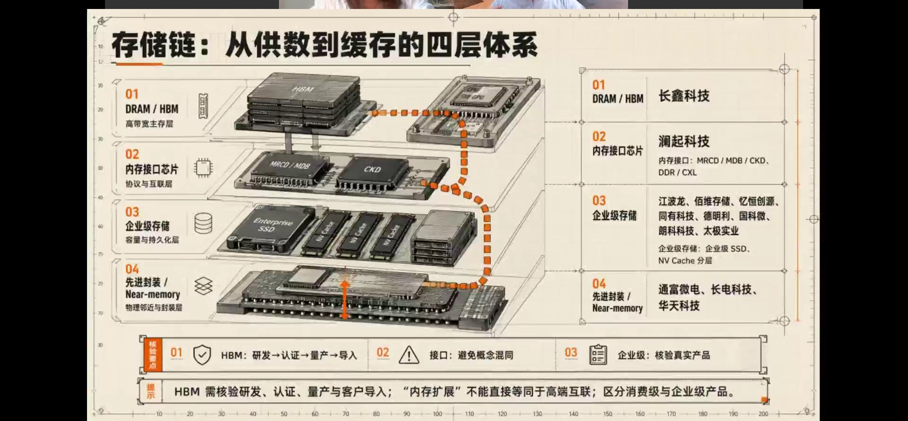
7.2 存储链四层体系与对应公司
- DRAM/HBM（高带宽主存层）：长鑫科技
- 内存接口芯片（协议互联层，MRCD/MDB/CKD、DDR/CXL）：澜起科技
- 企业级存储（容量持久化层）：江波龙、佰维存储、亿恒创源、同有科技、德明利、国科微、朗科科技、太极实业
- 先进封装/Near-memory（物理邻近封装层）：通富微电、长电科技、华天科技
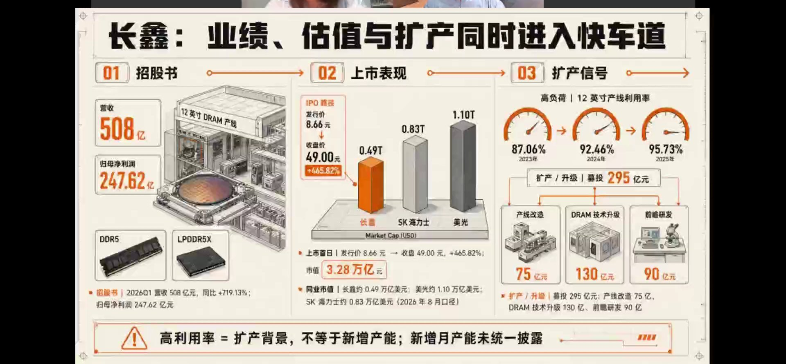
7.3 长鑫：业绩、估值与扩产
招股书与上市表现：
- 2026Q1营收508亿元（同比+719.13%），归母净利润247.62亿元
- 发行价8.66元 → 收盘49.00元（+465.82%），市值3.28万亿元
- 市值对比（美元）：长鑫0.49T / SK海力士0.83T / 美光1.10T
扩产：12英寸DRAM产线利用率 87.06%(2023) → 92.46%(2024) → 95.73%(2025)；募投295亿元（产线改造75亿、DRAM技术升级130亿、前瞻研发90亿），主打DDR5、LPDDR5X。注意：高利用率是扩产背景，不等于新增产能。
7.4 长鑫估值怎么看？
- 静态看，PS/PB/PE明显高于三星、海力士、美光；但隐含国产替代稀缺性 + 高速追赶的成长溢价
- 若未来中国存储占全球1/3以上、长鑫供其中2/3，则长鑫可占全球约20%-25%（现仅8%-9%），估值有支撑
- 存储进入"超级周期"，26-28年需求肉眼可见，至少到2027年逻辑不变；2027下半年/2028年可能随周期再判断
- 估值中约60%来自两方面稀缺性：供给端——全球第四/五家大型存储厂只有在中国（举国体制+逆周期扩产）才可能出现；需求端——国产替代下"生产多少就能卖多少"
7.5 扩产传导顺序
核心零部件/子系统最先受益（腔体、射频电源、真空泵、精密运动组件等，设备厂需先备货）→ 整机设备进场 → 调试（工具仪器+材料，如掩膜液）→ 颗粒产出后封测 → 做成模组。两长（长鑫、长存）+中芯国际+华虹约占未来三年全国扩产的四成以上。
八、互联链映射与华为自研边界
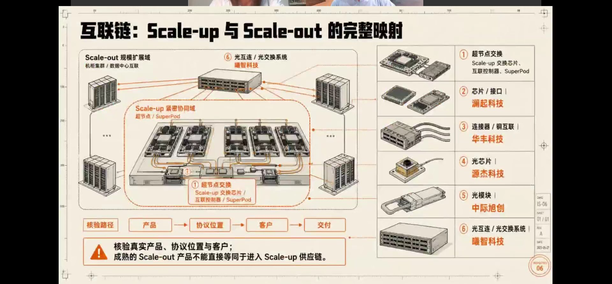
8.1 Scale-up 与 Scale-out
- Scale-out（规模扩展域）：机柜集群、数据中心之间互联
- Scale-up（紧密协同域）：超节点/SuperPod内部互联
六个环节与代表公司：
- 超节点交换（Scale-up交换芯片、互联控制器、SuperPod）
- 芯片/接口：澜起科技
- 连接器/铜互联：华丰科技
- 光芯片：源杰科技
- 光模块：中际旭创
- 光互联/光交换：曦智科技
注意：成熟的Scale-out产品不等于已进入Scale-up供应链。
8.2 互联链的瓶颈与弹性
- 光模块价值量最大：无论NPO、可插拔还是更高级的XPO形态，都是光模块，是最直接放量的子系统
- 光芯片供需最失衡：磷化铟（做CW光源/外置光源）属经验型工艺、难像CMOS大规模复制，硅本身不能发光，扩产受限；调制器有硅光、磷化铟、薄膜铌酸锂三条路线并行
- DSP最卡脖子：博通、Marvell占85%以上，高速DSP需3nm先进制程（基本只有台积电）；国产超节点（含华为）大量用无DSP的NPO方案，既是创新也是受供给所限；PD/TIA等中高端芯片国产化率也不高
- 弹性排序：光模块里的芯片（光芯片、电芯片）价值弹性比光模块本身更大；曦智的全光互联（类似OCS）是中期"期权价值"，当前属锦上添花
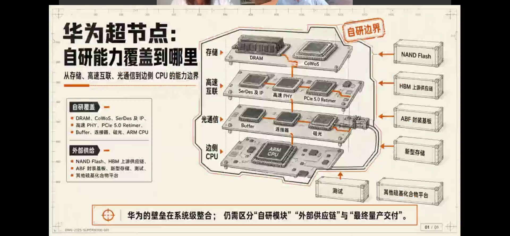
8.3 华为自研边界在哪里？
自研覆盖：DRAM、CoWoS、SerDes及IP、高速PHY、PCIe 5.0 Retimer、Buffer、连接器、硅光、ARM CPU。
外部供给：NAND Flash、HBM上游供应链、ABF封装基板、新型存储、测试、其他硅基化合物平台。
自研边界由两点决定：
- 地缘政治：本来有供给、不用自己做（如博通DSP），但受限制买不到，扶持国产又来不及，就先自研
- 价值与重要性：占价值高、一旦被卡很难受的关键环节（如存储）倾向自研；液冷、电源管理等外围则开放给伙伴
产业规律：超节点这类新结构在初期为保证供应链安全与性能，往往垂直整合、全面自研；待成熟后再分层、释放给产业链合作伙伴，这是一个动态过程。壁垒最终在系统级整合，需区分自研模块、外部供应链与最终量产交付。
九、Token工厂：算力开始按产出运营
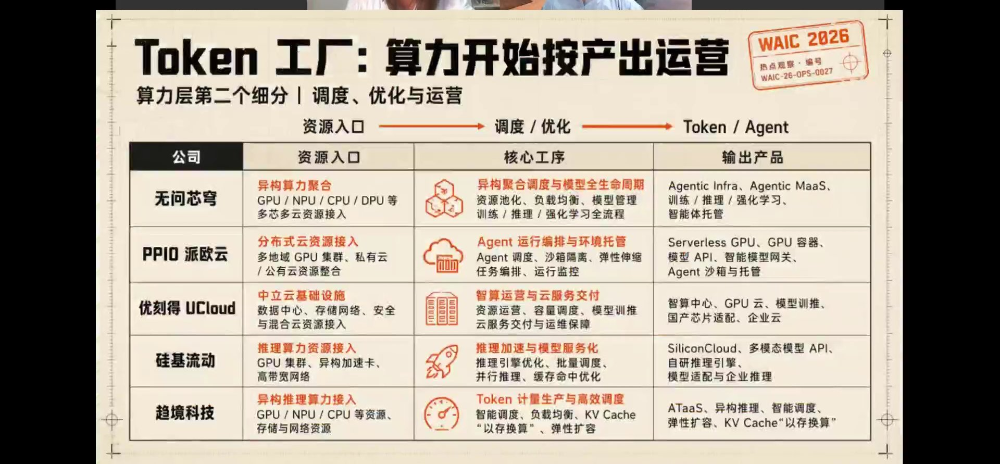
9.1 什么是Token工厂
Token工厂是云厂商、大模型厂商之外的第三方，给最终用户提供更有性价比的Token。核心逻辑：真实应用对算力质量要求不同（有的mission critical、有的只是聊天/对延迟不敏感），不同质量对应不同成本，没必要都用最贵的模型。
它把不同硬件、不同云聚合在一起，根据应用需求动态选择模型与算力组合，既满足性能又使成本最合算。本质是"资源入口 → 调度/优化 → Token/Agent"。
9.2 主要玩家与侧重
- 无问芯穹：异构算力聚合（GPU/NPU/CPU/DPU多芯多云）、异构聚合调度 → Agentic Infra、MaaS、智能体托管
- PPIO派欧云：分布式云、Agent运行编排与环境托管 → Serverless GPU、GPU容器、Agent沙箱
- 优刻得UCloud：中立云、智算运营 → 智算中心、GPU云、模型训推、企业云
- 硅基流动：推理接入与加速、模型服务化 → SiliconCloud、多模态API（轻资产、未买卡）
- 趋境科技：异构推理、Token计量、KV Cache以存换算 → ATaaS
9.3 商业模式：重资产 vs 轻资产
- 重资产：自建/自租一部分算力Infra（如无问芯穹）
- 轻资产：不买卡、纯软件编排（如硅基流动）；前两年没买卡，如今卡升值，行业调侃其"后悔没买卡"
长期存在与否，取决于两点：①模型提供厂商是否会极大收敛到很少几家；②第三方这一层的成本，能否让用户拿到的价格比直接找模型厂（其自身也做投放优化）更低。多家卖方竞价是第三方的价值，但加一层也带来成本。
今年下半年多家Token工厂递交IPO。估值核心看运营效率而非技术：组织协调能力、优化算法、与模型厂商的商业关系（能否拿到更好的批发价）、吸引用户的能力——是运营驱动的模式。
十、具身智能：从炫技走向落地与宇树招股书
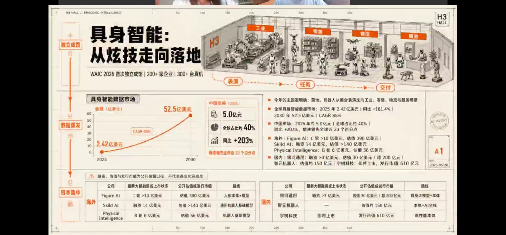
10.1 具身智能的阶段变化
- WAIC 2026首次独立成馆，200+企业、300+真机；主线从"表演 → 任务 → 交付"
- 厂商针对具体场景研发不同形态，"具身未必是人形"逐渐成为共识
10.2 市场规模数据
- 全球具身智能数据市场：2025年2.42亿美元（+181.4%）→ 2030年52.5亿美元，CAGR约85%
- 中国市场：2025年约5.0亿元、全球占比约40%、同比+203%，增速领先全球约20个百分点
10.3 主要公司估值
海外：Figure AI（C轮>10亿美元，估值390亿）、Skild AI（融资14亿，估值>140亿）、Physical Intelligence（B轮6亿，估值56亿）。
国内：银河通用（融资>3亿美元，估值30亿美元/超200亿元）、智元机器人（约150亿元）、宇树（即将上市，发行市值610亿元）。
10.4 落地场景与路线之争
- 最快商业化是科研场景：科研院所/学校购买，看重运控能力，需求清晰、易实现
- 工业场景仍在导入：以固定形态搬运/移动较确定；替代工人做重复操作尚早。需求最迫切的是高端制造等人力密集环节（熟练劳动力不可逆减少）
- 数据未收敛：今年行业突然发现具身数据远不够；真机采集低效、只能做fine-tuning，预训练需仿真+真机mix；以人类第一视角/ego穿戴式采集成为主流，重质量而非数量
- 模型未收敛：VLA、世界模型、动作模型路线各异
- 本体未收敛：人形是"什么都能干但每项都不是最佳"，现实需要"专机专用"（李飞飞亦不认可必为人形）；应把整条产线作为整体、让产线适配机器人，而非让机器人模仿人去适应旧环境
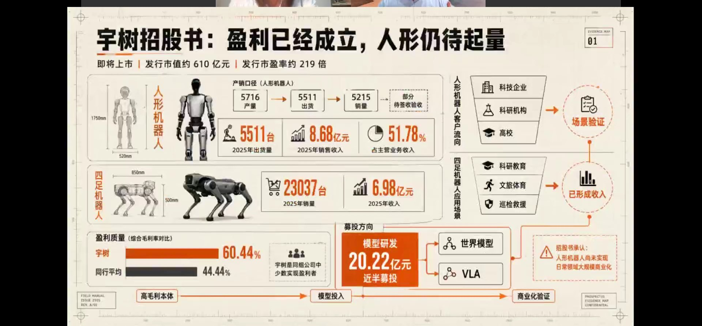
10.5 宇树招股书：盈利已成立、人形仍待起量
- 发行：发行市值约610亿元、发行市盈率约219倍
- 人形机器人：2025年产量5716、出货5511、销量5215；出货5511台、收入8.68亿元、占主营51.78%
- 四足机器人：2025年销量23037台、收入6.98亿元
- 盈利质量：毛利率60.44%，显著高于同行平均44.44%
- 募投：模型研发20.22亿元（近半募资），投向世界模型、VLA
- 客户结构：人形流向科技企业/科研/高校（场景验证）；四足用于科研教育/文旅体育/巡检救援（已形成收入）。招股书承认人形尚未实现日常领域大规模商业化
10.6 宇树610亿估值如何理解？
宇树有扎实的基本盘（科研市场几无强对手、运控流畅、价格有竞争力且能赚钱），是长期人形叙事最具象的载体。未来大量"大脑公司"中约3-5家会自研本体、其余需找强本体合作，宇树是首选；除特斯拉垂直一体化外，宇树最为领先。若按万亿级市场、国内头部占20%折现，600亿市值站得住——其中包含大量远期头部份额的期权价值。A股新股上市约4-5倍，港股约50家机器人公司排队，行业将在2-3年快速收敛。
十一、大模型分化与AI长期趋势判断
11.1 大模型公司的分化方向
- Kimi、阶跃星辰：围绕Coding场景，并向"AI+硬件终端"走（阶跃发布手机）
- 百川、零一万物：转向垂类AI赛道；李开复已偏向Palantir模式，到处谈咨询/实施合同
- 正面战场打不过时，避开正面竞争、转向垂类/硬件/咨询是普遍选择；但这类服务往往不是标准产品，需要理解B端流程、分阶段部署（类似Accenture、IBM的IT咨询实施）
11.2 智谱 vs MiniMax：股价差异来自叙事主线切换
- 两家同期上市，起初MiniMax猛涨、智谱不涨，随后戏剧性逆转
- 去年主线：多模态、C端获客、业务与海外市场多样性 → MiniMax（多模态、面向海外C端）先涨
- 今年主线：Anthropic的Coding成为焦点（美国市场OpenAI第一、Anthropic第二的格局似要倒转），Coding最易变现、最契合Agent、带来大量Token消耗，叠加中国算力出海 → 智谱（政企+Coding能力强）上涨
- 不在主线上的公司会遭遇"虹吸效应"（OpenAI也关停了Sora），如同诺基亚总裁所言："我们没做错什么，但好像市场不需要我了"
11.3 加餐：硅谷NeoLab新创新
围绕头部模型，硅谷热钱正投向一批新实验室：模型安全、自进化（用AI训练AI）、严谨数学推理、长程任务、世界模型与物理AI等。Transformer未必是模型的最终形态，一旦出现新架构突破，现有Infra还需重新调整优化。
11.4 中美具身竞争
- 中国场景更多、硬件领先，具身时代大概率优势更大
- 但不能回避两点：美国需求更迫切（人工太贵/缺失）、制造业回流决心与技术底子仍在（还有日韩、台湾地区帮衬，特斯拉GigaFactory自动化程度可能更高）
关键警示：中国的优势若不能在约3年内转化为实实在在的落地场景，3年后竞争优势可能没有现在想象的理想。此外还需处理"机器人上岗、现有人员如何安置"的社会问题（类似无人驾驶出租车司机抗议）。
11.5 AI长期风险与跟踪指标
太阳底下没有新鲜事：AI在成为真正有效"主体"前，仍需持续投入Infra、硬件、供电，与历次工业革命无本质区别，只是投资时间被大幅压缩。泡沫不代表方向错误，而是短期价格过度乐观、被证伪后回归。
牛市延续的三个关键：
① 美元流动性继续宽松（宽松是成长股的必要条件）；② 地缘政治相对缓和、监管可控；③ 关键财务指标持续给出正向反馈。
主线跟踪指标的演进：Infra能否deliver → 算力/模型公司能否产生收入 → ROI能否兑现 → 现金流能否跟上。越往后越接近经典商业指标。当前共识已开始松动，需警惕"合成谬误"（个体看似健康、全局互相对冲）。
核心观点总结
第一，WAIC 2026规模空前（3馆、10万㎡、1024家企业），展区热度以具身智能、算力基础设施领先；AI主线从"技术竞速"切换到"产业落地"。
第二，超节点是用高速互联把大量芯片耦合成逻辑统一的计算单元，今年进入量产元年；三大驱动是模型变大、国产替代（多机柜系统路线）、成本倒逼（利用率30%→70%）。
第三，超节点已形成四大共识：万亿模型必用、系统优化大于单卡、光互联不可逆、集成采购被接受；华为最成熟，中兴新华三居中，GPU创业公司在验证。
第四，国产化率排序为通信 > 计算 > 存储；系统角度约2-3年可追赶英伟达，靠系统优化与软硬协同。
第五，存储是最急迫瓶颈（数据搬不动），形成四层体系；长鑫高估值含国产稀缺性与成长溢价，扩产最先带动核心零部件。
第六，互联链中光模块价值最大、光芯片与DSP最卡脖子；华为初期垂直整合自研、成熟后再向产业链分层释放。
第七，Token工厂是第三方算力运营者，估值看运营效率；具身智能最快落地科研场景，宇树盈利成立、人形待起量，610亿估值含远期期权。
第八，大模型公司分化（Coding/硬件/垂类咨询），股价随叙事主线切换；长期跟踪美元宽松、地缘与财务兑现，中国具身优势需在3年内转化为落地。